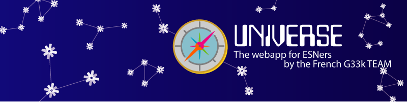

Welcome to ESNbang!, the new application for members of the Erasmus Student Network !
This application gathers many tools used every day by ESNers, everything is at the same place, no need to search for the tools anymore !
ESNbang! can also send you notifications: it listens to information sources (Facebook pages, livestreams, etc) and can tell you when something is happening !
Moreover, when you close its main frame, the application doesn't close itself, but rather goes background on your computer, still listening for news :)
Coded with love by the G33k team (France)